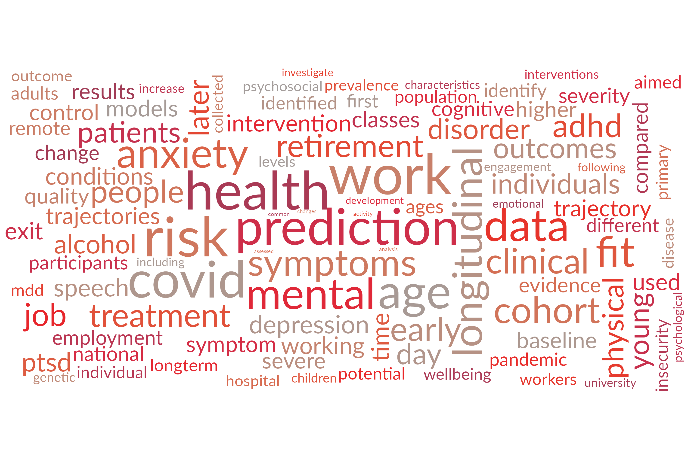
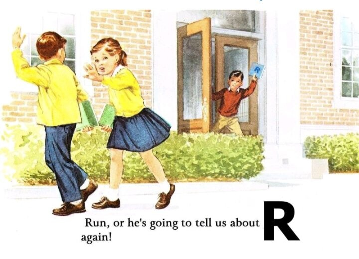
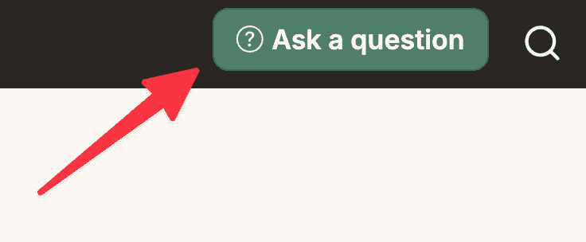
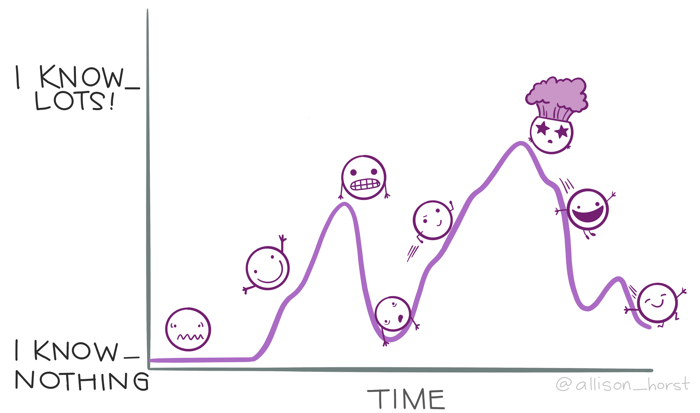
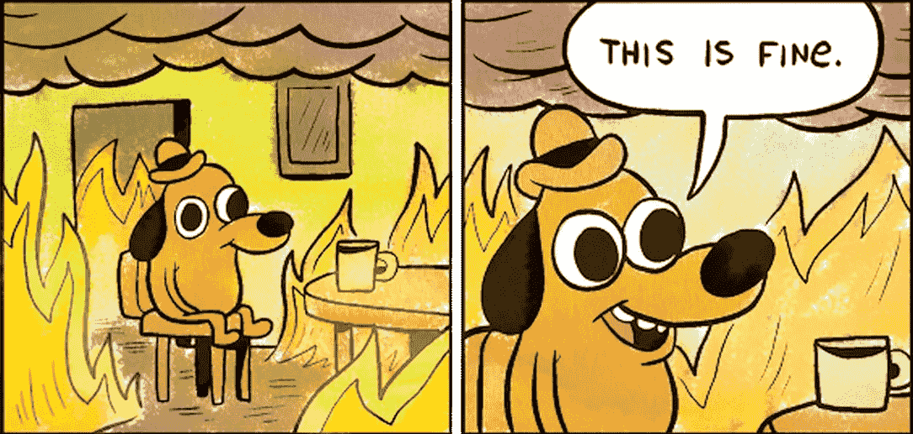

Beginner, Intermediate and Advanced
Department of Biostatistics & Health Informatics
King’s College London


All lectures and practicals can be found at the link below:
You should have received a password via email.
Updated throughout the course and available for at least one month after the final session.
Click the “Submit a question” link to send me questions during the week.

The sessions are spread over four weeks, allowing time for the material to sink in before moving on.
Some sessions may have a short video to watch before the session.
These will be posted on the HDR UK Futures platform.
Some sessions contain extra ‘homework’ exercises. If you want more practice, have at go at these in your own time.
Learning a new programming language is hard.
Especially when you’re used to another way of working
(e.g., Stata, SPSS or Python).

After 16 years of using R, I still:

I’ll touch on these where relevant, but we won’t teach advanced statistics here.
This is a large, online class with a mix of lectures and practical sessions.
During the lectures 🗣️
Post questions in the chat.
(You can message me directly, or the whole class).
Listen or type along — whatever works best for you.
During the practicals 💻
After the sessions 🕐
Every question is helpful
Someone else is almost certainly
wondering the same thing.
“If I take one more step, it’ll be the farthest away from home I’ve ever been.”
Good uses ✅
Caution ⚠️
Why I think we’ll still be coding in 5 years’ time